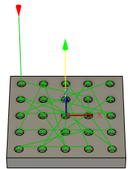
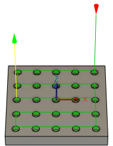
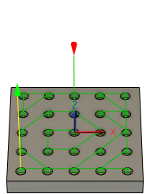
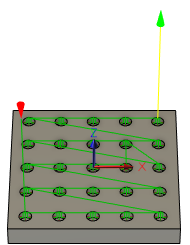
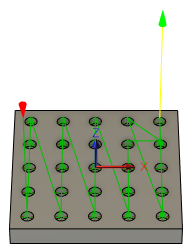

Specifica la modalità di ordinamento dei fori o delle sporgenze selezionate per l'ispezione. Ad esempio:
|  |
 |
 |
Ordine selezionato |
Ottimizza ordine |
'''Ordina dall'interno verso l'esterno''' |
|  |
 |
Ordina lungo X |
Ordina lungo Y |
- Ordine selezionato: esegue l'ispezione di fori o sporgenze nell'ordine in cui sono selezionati.
- Ottimizza ordine: esegue l'ispezione di fori o sporgenze nell'ordine più efficiente.
- '''Ordina dall'interno verso l'esterno''': esegue l'indagine di fori o sporgenze dal centro e dall'esterno.
- Ordina lungo X: esegue l'ispezione di fori o sporgenze nella direzione X.
- Ordina lungo Y: esegue l'ispezione di fori o sporgenze nella direzione Y.